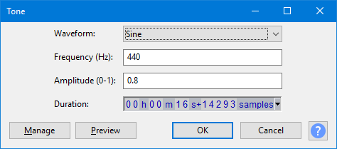

Tone
- Accessed by:
- 
{kind=link}
Waveform
Generates one of four different tone waveforms. The name of each tone roughly describes its appearance when zoomed in sufficiently to see each cycle of the waveform.
- Sine: A mathematical curve that describes a smooth repetitive oscillation. It contains no overtones so sounds very "pure".
- Square: Has fixed maximum and minimum values of identical duration with a near-vertical line between them, giving a characteristic "castle turret" shape. It contains every other overtone. Square waves are distinguished by having identical peak and RMS levels and so their waveforms show as entirely light blue when zoomed out.
- Sawtooth: Has a gradual upwards slope followed by a shorter downwards slope. It contains all overtones, so sounds very "nasal", "bright" and penetrating.
- Square (no alias): Similar to the Square wave but does not produce aliasing distortion. This makes it take longer to generate the tone.
Frequency
As with Chirp, frequencies can be specified anywhere between 1 Hz and half the current project rate as shown in Selection Toolbar.
One half is the maximum because any given sample rate can only carry frequencies up to half that rate. Although frequencies above 20000 Hz cannot be heard by most humans, generating at up to half the sample rate (22050 Hz at Audacity's default 44100 Hz) can have scientific uses, for example in measuring impulse responses.
Amplitude
Lets you type an amplitude value for the loudness of the generated audio. Permitted values are between 0 (silence) and 1 (the maximum possible volume without clipping), with a default of 0.8.
Duration
Type (or use the keyboard arrows) to enter the required Duration. If the first digit you want is highlighted, just type the whole number. If the required first digit is not highlighted, use Left or Right arrow on your keyboard to move to the first digit, then type. You can also increment a highlighted digit with keyboard Up or Down arrow instead of typing.
- When generating at the cursor, Duration initializes to 30.000 seconds (except for the DTMF generator which defaults to 1.000 second). However, your last entered Duration is always remembered.
- When replacing a selection region, Duration always displays the exact duration of that selection to the nearest audio sample.
The command buttons
Clicking on the command buttons give the following results:
- gives a dropdown menu enabling you to manage presets for the tool and to see some detail about the tool. For details see Manage presets.
- plays a short preview of what the audio would sound like if the effect is applied with the current settings, without making actual changes to the audio. The length of preview is determined by your setting in , the default setting is 6 seconds.
- applies the effect to the selected audio with the current effect settings.
- aborts the effect and leaves the audio unchanged.
 brings you to the appropriate page in the Manual, this page.
brings you to the appropriate page in the Manual, this page.